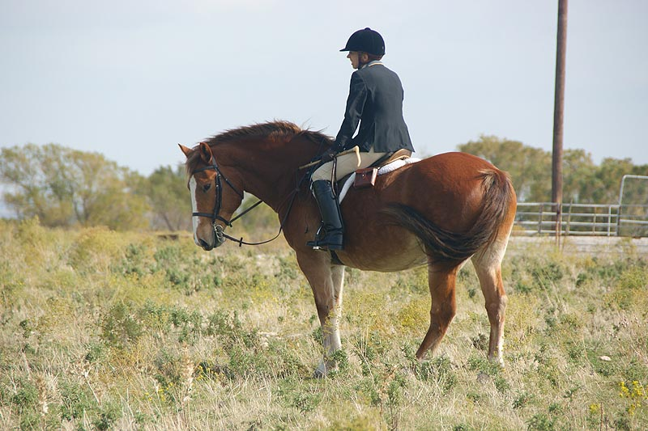

Out with the Hunt
I started back on Thistle with hunt trail rides and roading at the kennels.
He was more fun than I expected, so I whipped in on him when the season started.
We went out paired up with other riders, but Thistle was happy to head out on our own when needed.
Getting situated in the tack.

Working through the woods at the kennels.

Working at the kennels on another day.
Watching the huntsman gather the hounds. He's learning his new job, but it's obvious
he remembers his old one.
Leading a group at the kennels. Thistle is telling us where the hounds are in the
woods.
He's a solid ride and it's pretty easy to stay in the middle of him.
Saying hello to one of the puppies.

We haven't done a lot of jumping, but he's always forward and willing.
Father had Thistle at the farm while he was growing up.
Gathered for our first formal hunt of the season. Thistle is on the far left.
Fall hunting. Amanda has ridden Thistle around at the house, but they don't know
each other well enough for her to take him out in the field.
The huntsman took out my Thuy this hunt. Thistle neighed a few times to his trailer-mate,
but he didn't get silly when they'd go off with the hounds.
I'm 5'6". He takes up a lot of leg.
Getting the gate for the other riders. We're working through that he's right handed
and I'm left handed when it comes to gates. If I need it fast we do right handed,
if I want to prove a point, I asked him to do it left handed.
Thistle keeping a youngster company his first time out.
Thistle has the best walk of all my hunt horses. He can get sluggish if we aren't necessarily heading the direction he thinks we should be going, though.
Heading out to the East. I wondered how Thistle'd be with other horses since he
was used to being left alone as the hunstman's horse. He seems just fine leading
or following with others.
I took my Miaren horse on a hunt trail ride once this seaon. It was strange to see how much they notice or what bothers them when they've never been out. Standing
on the trail waiting for a gate seems a given with a horse like Thistle. Miaren
had to figure out the concept.
Stopping and saying hi to the photographer.
Out on our own Thistle saw everything and was ready to go where needed.
On this property the photographer can catch shots with a long lens that our other
properties don't offer.

Back at the hound trailer.